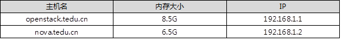

NSD CLOUD DAY02
1 案例1：配置yum仓库
1.1 问题
本案例要求把三个镜像配置yum源：
- CentOS7-1708光盘内容作为仓库源
- 配置 RHEL7-extars内容加入仓库源
- RHEL7OSP-10光盘中包含多个目录，每个目录都是仓库源（可以使用脚本生成）
1.2 步骤
实现此案例需要按照如下步骤进行。
步骤一：配置 yum仓库
警告：仅yum配置的第一个源（系统源）为gpgcheck=1需要导入公钥，其他的都是gpgcheck=0，否则安装会报错。
- [root@room9pc01 ~]# mkdir /var/ftp/system
- [root@room9pc01 ~]# mkdir /var/ftp/extras
- [root@room9pc01 ~]# mkdir /var/ftp/HEL7OSP
- [root@room9pc01 ~]# vim /etc/fstab
- /iso/RHEL7OSP-10.iso /var/ftp/HEL7OSP iso9660 defaults 0 0
- /iso/CentOS7-1708.iso /var/ftp/system iso9660 defaults 0 0
- /iso/RHEL7-extras.iso /var/ftp/extras iso9660 defaults 0 0
- [root@room9pc01 ~]# mount –a
- mount: /dev/loop0 is write-protected, mounting read-only
- mount: /dev/loop1 is write-protected, mounting read-only
- mount: /dev/loop2 is write-protected, mounting read-only
- [root@room9pc01 ~]# vim /etc/yum.repos.d/local.repo
- [local_repo]
- name=CentOS-$releasever - Base
- baseurl="ftp://192.168.1.254/system"
- enabled=1
- gpgcheck=1
- [local_extras]
- name=extras
- baseurl="ftp://192.168.1.254/extras"
- enabled=1
- gpgcheck=0
- [1local_devtools-rpms]
- name=devtools-rpms
- baseurl="ftp://192.168.1.254/HEL7OSP/rhel-7-server-openstack-10-devtools-rpms"
- enabled=1
- gpgcheck=0
- [2local_optools-rpms]
- name=optools-rpms
- baseurl="ftp://192.168.1.254/HEL7OSP/rhel-7-server-openstack-10-optools-rpms"
- enabled=1
- gpgcheck=0
- [3local_rpms]
- name=rpms
- baseurl="ftp://192.168.1.254/HEL7OSP/rhel-7-server-openstack-10-rpms"
- enabled=1
- gpgcheck=0
- [4local_tools-rpms]
- name=tools-rpms
- baseurl="ftp://192.168.1.254/HEL7OSP/rhel-7-server-openstack-10-tools-rpms"
- enabled=1
- gpgcheck=0
- [5local_mon-rpms]
- name=mon-rpms
- baseurl="ftp://192.168.1.254/HEL7OSP/rhel-7-server-rhceph-2-mon-rpms"
- enabled=1
- gpgcheck=0
- [6local_osd-rpms]
- name=osd-rpms
- baseurl="ftp://192.168.1.254/HEL7OSP/rhel-7-server-rhceph-2-osd-rpms"
- enabled=1
- gpgcheck=0
- [7local_rhceph-2-tools-rpms]
- name=rhceph-2-tools-rpms
- baseurl="ftp://192.168.1.254/HEL7OSP/rhel-7-server-rhceph-2-tools-rpms"
- enabled=1
- gpgcheck=0
- [8local_agent-rpms]
- name=agent-rpms
- baseurl="ftp://192.168.1.254/HEL7OSP/rhel-7-server-rhscon-2-agent-rpms"
- enabled=1
- gpgcheck=0
- [9local_installer-rpms]
- name=installer-rpms
- baseurl="ftp://192.168.1.254/HEL7OSP/rhel-7-server-rhscon-2-installer-rpms"
- enabled=1
- gpgcheck=0
- [10local_rhscon-2-main-rpms]
- name=rhscon-2-main-rpms
- baseurl="ftp://192.168.1.254/HEL7OSP/rhel-7-server-rhscon-2-main-rpms"
- enabled=1
- gpgcheck=0
2 案例2：配置DNS服务器：
2.1 问题
本案例要求掌握DNS服务器的配置：
- 允许DNS服务器为所有的客户端提供服务
- 解析域名openstack.tedu.cn
- 解析域名nova.tedu.cn
2.2 方案
此实验的整体方案需要三台机器，openstack作为主节点，nova作为额外节点，真机做为DNS和NTP的服务器(这里不再在表-1中体现，在真机上面直接配置即可)，提供域名解析和时间同步服务，具体情况如表-1所示：
表-1
2.3 步骤
实现此案例需要按照如下步骤进行。
步骤一：配置DNS（真机操作）
- [root@room9pc01 ~]# yum -y install bind bind-chroot
- [root@room9pc01 ~]# vim /etc/named.conf
- options {
- listen-on port 53 { 192.168.1.3; }; //修改ip
- allow-query { any; }; //允许所有
- recursion yes;
- forwarders { 172.40.1.10; }; //转发dns,真机的服务器地址
- dnssec-enable no;
- dnssec-validation no;
- };
- [root@room9pc01 ~]# systemctl restart named
步骤二：两台虚拟机配置静态ip
注意：两台主机同样操作，改一下ip即可（以openstack.tedu.cn为例）
- [root@localhost ~]# echo openstack.tedu.cn > /etc/hostname
- [root@localhost ~]# hostname openstack.tedu.cn //另外一台主机改名为nova.tedu.cn
- [root@openstack ~]# vim /etc/sysconfig/network-scripts/ifcfg-eth0
- # Generated by dracut initrd
- DEVICE="eth0"
- ONBOOT="yes"
- IPV6INIT="no"
- IPV4_FAILURE_FATAL="no"
- NM_CONTROLLED="no"
- TYPE="Ethernet"
- BOOTPROTO="static"
- IPADDR="192.168.1.1"
- PREFIX=24
- GATEWAY=192.168.1.254
- [root@openstack ~]# systemctl restart network
步骤三：域名解析
- [root@openstack ~]# vim /etc/hosts
- //在openstack.tedu.cn和nova.tedu.cn主机上面操作
- 192.168.1.1 openstack.tedu.cn
- 192.168.1.2 nova.tedu.cn
测试能否ping通，如图-1所示：

图-1
3 案例3：配置NTP服务器
3.1 问题
本案例要求配置NTP时间同步服务器：
- 将NTP服务与DNS服务部署在同一台主机上
- 确认NTP服务器的时区是东八区
- 确认NTP服务器的时间准确
- 计划安装openstack的服务器与NTP服务器进行时间校正
3.2 步骤
实现此案例需要按照如下步骤进行。
步骤一：配置NTP时间同步（真机操作）
- [root@room9pc01 ~]# yum -y install chrony
- [root@room9pc01 ~]# vim /etc/chrony.conf
- server ntp1.aliyun.com iburst
- bindacqaddress 0.0.0.0
- allow 0/0 //允许所有人使用我的时间服务器
- cmdallow 127.0.0.1 //控制指令
- [root@room9pc01 ~]# systemctl restart chronyd
- [root@room9pc01 ~]# netstat -antup | grep chronyd
- udp 0 0 0.0.0.0:123 0.0.0.0:* 23036/chronyd
- udp 0 0 127.0.0.1:323 0.0.0.0:* 23036/chronyd
- [root@room9pc01 ~]# chronyc sources -v //出现*号代表NTP时间可用
- ^* 120.25.115.20 2 6 17 62 -753us[-7003us] +/- 24ms
4 案例4：环境准备
4.1 问题
本案例要求准备基础环境，为安装openstack做准备：
- 准备openstack的基础环境
4.2 步骤
实现此案例需要按照如下步骤进行。
步骤一：准备基础环境
1）配置yum源
备注：只有系统源的gpgcheck=1，其他的都是gpgcheck=0）
- [root@room9pc01 ~]# scp /etc/yum.repos.d/local.repo \
- 192.168.1.1:/etc/yum.repos.d/ //拷贝给openstack.tedu.cn这台主机
- [root@room9pc01 ~]# scp /etc/yum.repos.d/local.repo \
- 192.168.1.2:/etc/yum.repos.d/ //拷贝给nova.tedu.cn这台主机
步骤二：配置ip
备注： 配置eth0为公共网络，网络地址192.168.1.0/24（已经配置过）
配置eth1为隧道接口，网络地址192.168.2.0/24
1）给openstack.tedu.cn主机添加eth1网卡
- [root@room9pc01 networks]# virsh -c qemu:///system attach-interface openstack bridge private2 --model virtio
- Interface attached successfully //添加成功
- [root@openstack ~]# cd /etc/sysconfig/network-scripts
- [root@openstack network-scripts]# cp ifcfg-eth0 ifcfg-eth1
- [root@openstack network-scripts]# vim ifcfg-eth1
- # Generated by dracut initrd
- DEVICE="eth1"
- ONBOOT="yes"
- IPV6INIT="no"
- IPV4_FAILURE_FATAL="no"
- NM_CONTROLLED="no"
- TYPE="Ethernet"
- BOOTPROTO="static"
- IPADDR="192.168.2.1"
- PREFIX=24
- GATEWAY=192.168.1.254
- [root@openstack network-scripts]# systemctl restart network
2）给nova.tedu.cn主机添加eth1网卡
- [root@room9pc01 networks]# virsh -c qemu:///system attach-interface nova bridge private2 --model virtio
- Interface attached successfully //添加成功
- [root@nova ~]# cd /etc/sysconfig/network-scripts
- [root@nova network-scripts]# cp ifcfg-eth0 ifcfg-eth1
- [root@nova network-scripts]# vim ifcfg-eth1
- # Generated by dracut initrd
- DEVICE="eth1"
- ONBOOT="yes"
- IPV6INIT="no"
- IPV4_FAILURE_FATAL="no"
- NM_CONTROLLED="no"
- TYPE="Ethernet"
- BOOTPROTO="static"
- IPADDR="192.168.2.2"
- PREFIX=24
- GATEWAY=192.168.1.254
- [root@openstack network-scripts]# systemctl restart network
3）配置卷组（openstack主机上面操作）
- [root@room9pc01 images]# qemu-img create -f qcow2 disk.img 50G
- Formatting 'disk.img', fmt=qcow2 size=53687091200 encryption=off cluster_size=65536 lazy_refcounts=off
- [root@room9pc01 networks]# virsh -c qemu:///system attach-disk openstack \
- /var/lib/libvirt/images/disk.img vdb --subdriver qcow2 --sourcetype file
- Disk attached successfully //添加成功
- [root@openstack ~]# yum install lvm2
- [root@openstack ~]# pvcreate /dev/vdb
- [root@openstack ~]# vgcreate cinder-volumes /dev/vdb
4）安装openstack的依赖包（openstack.tedu.cn和nova.tedu.cn主机上面
- [root@openstack ~]# yum install -y qemu-kvm libvirt-client libvirt-daemon libvirt-daemon-driver-qemu python-setuptools
- [root@nova ~]# yum install -y qemu-kvm libvirt-client libvirt-daemon libvirt-daemon-driver-qemu python-setuptools
5 案例5：部署Openstack：
5.1 问题
本案例要求通过packstack完成以下配置：
- 通过packstack部署Openstack
- 根据相关日志文件进行排错
5.2 步骤
实现此案例需要按照如下步骤进行。
步骤一：安装packstack
- [root@openstack ~]# yum install -y openstack-packstack
- [root@openstack ~]# packstack --gen-answer-file answer.ini
- //answer.ini与answer.txt是一样的，只是用vim打开answer.ini文件有颜色
- Packstack changed given value to required value /root/.ssh/id_rsa.pub
- [root@openstack ~]# vim answer.ini
- 11 CONFIG_DEFAULT_PASSWORD=redhat //密码
- 42 CONFIG_SWIFT_INSTALL=n
- 75 CONFIG_NTP_SERVERS=192.168.1.3 //时间服务器的地址
- 554 CONFIG_CINDER_VOLUMES_CREATE=n //创建卷,已经手动创建过了
- 840 CONFIG_NEUTRON_ML2_TYPE_DRIVERS=flat,vxlan //驱动类型
- 876 CONFIG_NEUTRON_ML2_VXLAN_GROUP=239.1.1.5
- //设置组播地址,最后一个随意不能为0和255,其他固定
- 910 CONFIG_NEUTRON_OVS_BRIDGE_MAPPINGS=physnet1:br-ex //物理网桥的名称
- 921 CONFIG_NEUTRON_OVS_BRIDGE_IFACES=br-ex:eth0
- //br-ex桥的名称与eth0连接，管理eth0,网桥与哪个物理网卡连接
- 936 CONFIG_NEUTRON_OVS_TUNNEL_IF=eth1
- 1179 CONFIG_PROVISION_DEMO=n //DEMO是否测试
- [root@openstack ~]# packstack --answer-file=answer.ini
- **** Installation completed successfully ****** //出现这个为成功
步骤二：安装openstack可能会出现的错误以及排错方法
1）ntp时间不同步，如图-2所示：
图-2
解决办法：查看ntp时间服务器，是否出现*号，若没有，查看配置文件，配置ntp服务器步骤在案例3，可以参考
- [root@room9pc01 ~]# chronyc sources -v //出现*号代表NTP时间可用
- ^* 120.25.115.20 2 6 17 62 -753us[-7003us] +/- 24ms
- [root@openstack ~]# chronyc sources -v
- ^* 192.168.1.3 3 9 377 504 +50us[ -20us] +/- 24ms
- [root@nova ~]# chronyc sources -v
- ^* 192.168.1.3 3 9 377 159 -202us[ -226us] +/- 24ms
2）网桥名称写错，如图-3所示：
图-3
解决办法：检查配置文件
- [root@openstack ~]# vim answer.ini
- ...
- 921 CONFIG_NEUTRON_OVS_BRIDGE_IFACES=br-ex:eth0
- //br-ex桥的名称与eth0连接，管理eth0,网桥与哪个物理网卡连接
- ...
3）若/root/.ssh/id_rsa.pub，提示password，同样是配置文件没有写对，如图-4所示：

图-4
4）yum源没有配置正确，如图-5所示：

图-5
解决办法：检查yum是否为10731个软件包，查看是否是yum源没有配置正确，之后安装oprnstack-dashboard
备注：除了系统源gpgcheck=1之外，其他都是gpgcheck=0
5）出现Cannot allocate memory,如图-6所示：
图-6
解决办法：
内存不足，重新启动主机
6 案例6：网络管理
6.1 问题
本案例要求运用OVS完成以下配置：
- 查看外部OVS网桥及其端口
- 验证OVS配置
6.2 步骤
实现此案例需要按照如下步骤进行。
步骤一：查看外部OVS网桥
1）查看br-ex网桥配置（br-ex为OVS网桥设备）
- [root@openstack ~]# cat /etc/sysconfig/network-scripts/ifcfg-br-ex
- ONBOOT="yes"
- NM_CONTROLLED="no"
- IPADDR="192.168.1.1"
- PREFIX=24
- GATEWAY=192.168.1.254
- DEVICE=br-ex
- NAME=br-ex
- DEVICETYPE=ovs
- OVSBOOTPROTO="static"
- TYPE=OVSBridge
2）查看eth0网卡配置（该网卡为OVS网桥的接口）
- [root@nova ~]# cat /etc/sysconfig/network-scripts/ifcfg-eth0
- DEVICE=eth0
- NAME=eth0
- DEVICETYPE=ovs
- TYPE=OVSPort
- OVS_BRIDGE=br-ex
- ONBOOT=yes
- BOOTPROTO=none
3）验证OVS配置
- [root@nova ~]# ovs-vsctl show
- Bridge br-ex
- Controller "tcp:127.0.0.1:6633"
- is_connected: true
- fail_mode: secure
- Port br-ex
- Interface br-ex
- type: internal
- Port phy-br-ex
- Interface phy-br-ex
- type: patch
- options: {peer=int-br-ex}
- Port "eth0"
- Interface "eth0"
- ovs_version: "2.5.0"
7 案例7：管理项目
7.1 问题
本案例要求通过Horizon完成以下操作：
- 创建名为myproject的项目
- 查看项目信息
- 更新vcpu配额为30
- 删除myproject
7.2 步骤
实现此案例需要按照如下步骤进行。
步骤一：浏览器访问openstack
1）浏览器访问
- [root@openstack conf.d]# firefox 192.168.1.1 //访问失败
2）需要改配置文件并重新加载
- [root@openstack ~]# cd /etc/httpd/conf.d/
- [root@openstack conf.d]# vi 15-horizon_vhost.conf
- 35 WSGIProcessGroup apache
- 36 WSGIApplicationGroup %{GLOBAL} //添加这一行
- [root@openstack conf.d]# apachectl graceful //重新载入配置文件
3）浏览器访问，出现页面，如图-6所示：

图-6
3）查看默认用户名和密码
- [root@openstack conf.d]# cd
- [root@openstack ~]# ls
- answer.ini keystonerc_admin //keystonerc_admin生成的文件，里面有用户名和密码
- [root@openstack ~]# cat keystonerc_admin
- unset OS_SERVICE_TOKEN
- export OS_USERNAME=admin //用户名
- export OS_PASSWORD=1bb4c987345c45ba //密码
- export OS_AUTH_URL=http://192.168.1.1:5000/v2.0
- export PS1='[\u@\h \W(keystone_admin)]\$ '
- export OS_TENANT_NAME=admin
- export OS_REGION_NAME=RegionOne
4）在火狐浏览器中输入用户名和密码，登录后页面如图-7所示：
图-7
4）创建名为myproject的项目
- [root@openstack ~]# source ~/keystonerc_admin //初始化环境变量
- [root@openstack ~(keystone_admin)]# openstack project create myproject
- +-------------+----------------------------------+
- | Field | Value |
- +-------------+----------------------------------+
- | description | None |
- | enabled | True |
- | id |f73949e2701346328faf5c1272414cd0|
- | name | myproject |
- +-------------+----------------------------------+
5）查看项目信息
- [root@openstack ~(keystone_admin)]# openstack project list
- +----------------------------------+-----------+
- | ID | Name |
- +----------------------------------+-----------+
- | 3fd5bffd734543d39cf742492273a47f | services |
- | 7f0b43274a9f4e149357fc8393ff2c68 | admin |
- | f73949e2701346328faf5c1272414cd0 | myproject |
- +----------------------------------+-----------+
6）更新vcpu配额为30
- [root@openstack ~(keystone_admin)]# nova quota-update --cores 30 myproject
7）删除myproject
- [root@openstack ~(keystone_admin)]# openstack project delete myproject